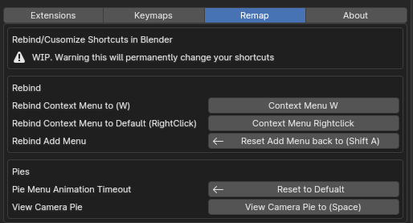

Preferences
Open Edit › Preferences › Add-ons › Key Ops: Toolkit, or click Prefs in the Toolkit sidebar panel.
Extensions / Settings
The left column lists every feature, grouped as on this site: Industry Standard, Toolkit, Tools, Pie Menu, Extra and Legacy. Click a toggle to enable or disable a feature immediately; no restart needed. Click the description next to it to open its page here.
The right column shows Settings for the features that are enabled. On a narrow preferences window, Settings moves to its own tab.
Keymaps
Every shortcut the add-on registers, split into Operations and Pie Menus. Change, disable or reset them here, like in Blender's own keymap editor. Only shortcuts of enabled features are listed.
All defaults are on the Shortcut Cheat Sheet.
Rebind
| Option | What it does |
|---|---|
| Context Menu: Right-click | Moves the Object, Edit Mesh, Curve, Lattice and Vertex Paint context menus to right-click |
| Context Menu: W | Adds the context menus on W |
| Add Menu | Moves the Add Objects Pie to Shift A (Blender's Add menu moves to Shift Alt A), or resets it |
| View Camera Pie | Puts the View pie on Space and Play Animation on Shift Space, or resets it |
| Pie Menu Animation Timeout | No Lag Pie Menu Settings sets Blender's pie animation timeout to 0 so pies open instantly. Reset to Default restores it. |

Experimental
Use with careEnable Experimental at the bottom of Settings shows work-in-progress features: the Utility Pie, the UV Pies, and Maya Pivot in Edit Mode. They may change or break between versions.